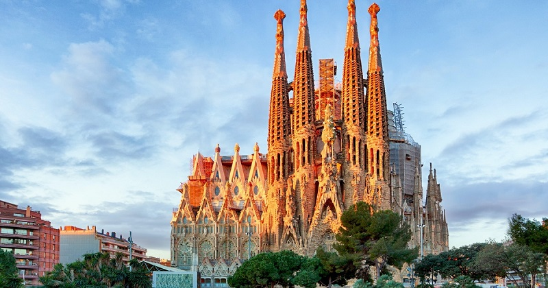
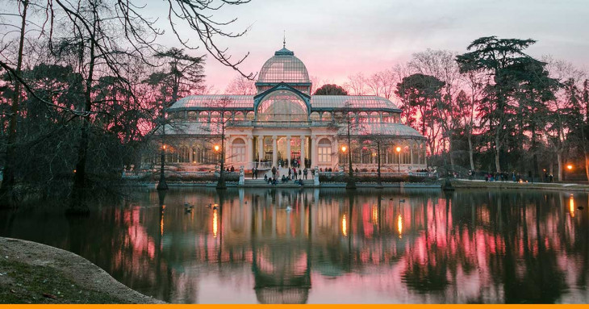

Descubra os destinos mais visitados da Espanha com foco em experiências, arte, natureza e cultura local.

Templo Expiatório da Sagrada Família, também conhecido simplesmente como Sagrada Família, é um grande templo católico da cidade de Barcelona, Catalunha, Espanha, desenhado pelo arquiteto catalão Antoni Gaudí, e considerado por muitos críticos como a sua obra-prima e expoente da arquitetura modernista catalã.
Alhambra ou, preferencialmente, Alambra é um complexo palaciano e fortaleza localizado na cidade e município de Granada, na província homónima, comunidade autónoma da Andaluzia, na Espanha, em posição dominante no alto duma elevação arborizada na parte sudeste da cidade.p>
O Museu do Prado é o mais importante museu da Espanha e um dos mais importantes do mundo. Apresentando belas e preciosas obras de arte, localiza-se em Madrid e foi mandado construir por Carlos III. As obras de construção se estenderam por muitos anos, tendo sido inaugurado somente no reinado de Fernando VII.
O Parque Güell é um grande parque urbano com elementos arquitetónicos situado no distrito de Gràcia da cidade de Barcelona, na vertente virada para o mar Mediterrâneo do Monte Carmelo, não muito longe do Tibidabo.

O Parque do Retiro de Madrid é um parque da cidade de Madrid, na Espanha. Foi criado entre 1630 e 1640 e tem uma área de 118 hectares. Foram classificados, junto com o Paseo del Prado, como Património Mundial da UNESCO em 2021.